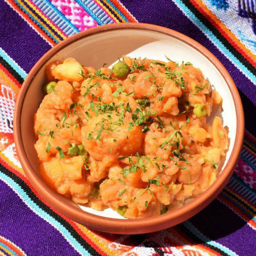
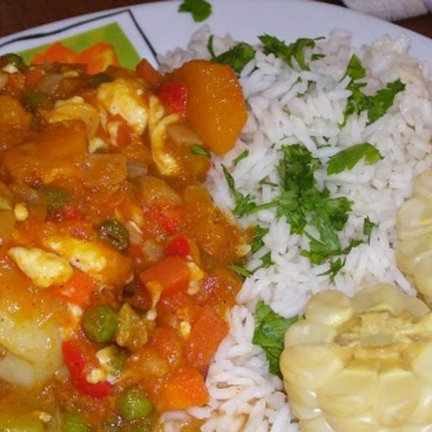

12 platos tipicos de Semana Santa en Bolivia



Arroz con leche: Es un postre típico que se sirve frío o caliente. Se acostumbra a espolvorearlo con canela y clavo de olor.
Wallaque de pejerrey: Es un caldo de pescado. Para su elaboración se utilizan dientes de ajo, ají amarillo, muña, papas y chuño.
Queso humacha: Consiste en un queso derretido en ají amarillo, choclo desgranado, huevos duros picados y papa blanca.
Sopa de papapica: Es una sopa de papas picadas. Predomina un caldo de verduras y huevos batidos.
Papas a la huancaína: Es un platillo típico de la gastronomía peruana, servido con papas hervidas y bañadas en ají de maní. Es emplatado con lechuga y huevos duros.
Chupe de camarones: Es una sopa espesa y picante que lleva como ingredientes principales camarones, papa hervida, queso fresco, choclo, arroz y huevo, además de un aderezo de ají colorado.
Ají de arvejas: El principal ingrediente son las arvejas. El plato es acompañado de papas blancas y un ahogado de ají amarillo.
Sopa de pan: Es un tipo de lasaña (por la estructura) que tiene de pisos y es acompañado de un jigote de varios ingredientes.
Sopa de quinua: Es un plato originario de los Andes que lleva por ingredientes papas, cebolla, maní y leche.
Carbonada: Es un plato de puré de zapallo con verduras retostadas, rodajas de choclo, jigote de ají amarillo, tomate y cebolla. Puede ser servido con queso rallado y perejil picado.
Pescado a la parrilla: De la gran variedad de pescados en el país, el Tambaquí es uno de los más requeridos y es cocinado a la parrilla, marinado con sal y limón.
Sajta de papaliza: El ingrediente principal es la papaliza (papa deshidratada), acompañada de un ají que consiste en un ahogado de varios ingredientes y es emplatado usualmente con arroz blanco.